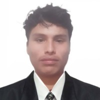
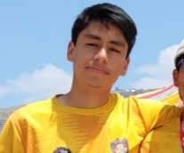
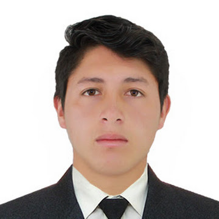
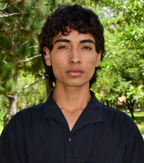
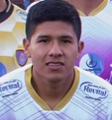
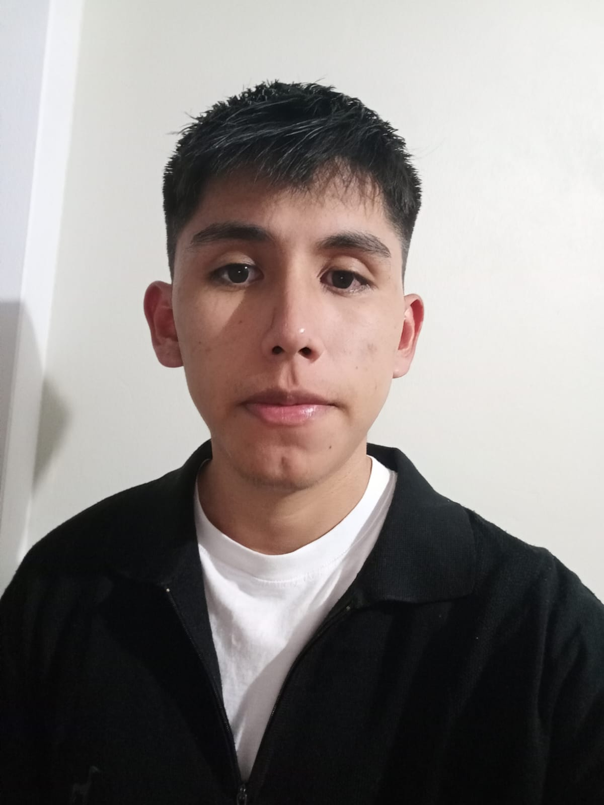
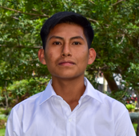

Nuestro Equipo Directivo
CAMPOS PORRAS, Frank Crismar
Presidente | 22 años


NAVARRO GUILLEN, Emerson
Vicepresidente | 21 años

GUTIÉRREZ SOSA, Bichenso Ranses
Coordinador de Actas y Acuerdos | 22 años

LLALLAHUI GOMEZ, Cristian mier
Coordinador Académico

HUAMANÍ RIVERA, Alexis
Coordinador de Relaciones Públicas | 20 años
GUTIÉRREZ GUTIÉRREZ, Keyla
Coordinador Económico y Desarrollo | 21 años
GARCÍA MOISÉS, Hans Angel
Coordinador de Deporte (1)

JUAN CARLOS QUISPE MENDOZA
Coordinador de Deporte (2)

TAPAHUASCO GALINDO, LUIS ALBERTO
Coordinador de eventos culturales | (400)

ASTO CURO, Royer
Coordinador de prensa y publicidad | Serie: (200)
LIZANO CURI, Alexander
Vocal | (100)